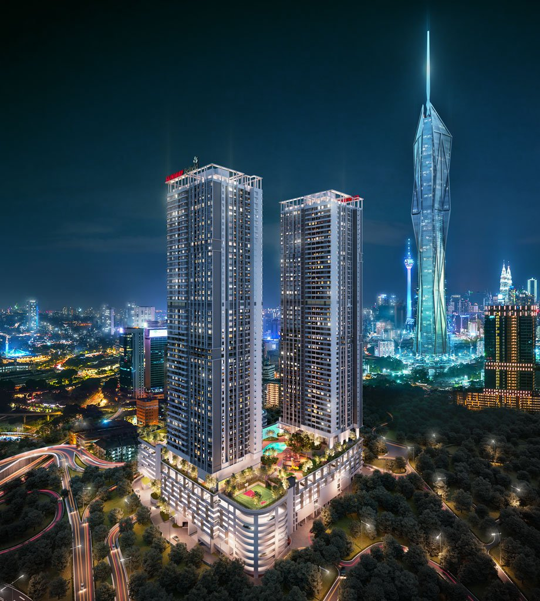
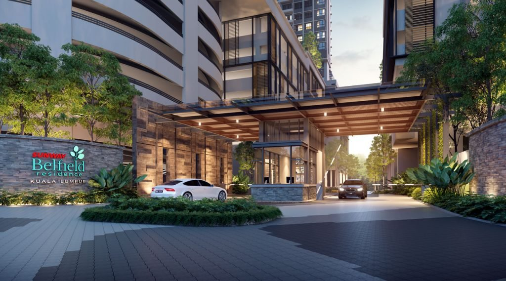
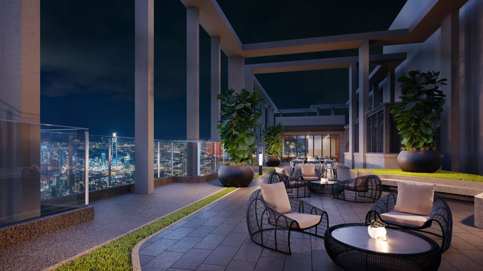
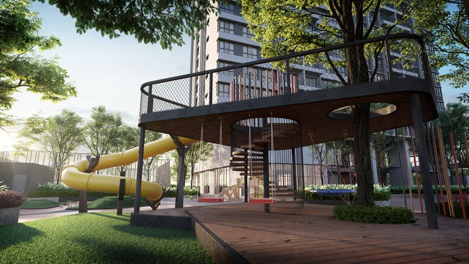
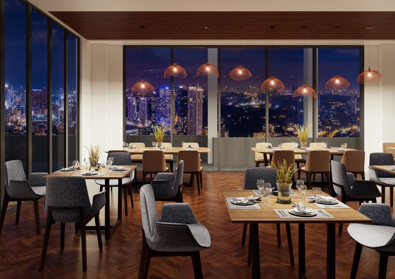

Sunway Belfield: tranquil living in bustling KL City Centre

KUALA LUMPUR: Standing tall in the middle of bustling Kuala Lumpur with a breath-taking view of the sprawling city below is Sunway Belfield, yet another prominent development by the reputable Sunway Property.
This new and upcoming development offers residents the rare experience of living in tranquil surroundings along Jalan Belfield while enjoying all the conveniences the city has to offer.
Clearly, Sunway Belfield is redefining the meaning of being “strategically located” with residents enjoying easy access to major roads and public transport as well as places of interest for recreational activities.
The development’s three residential towers of service apartments sit on 4.53 acres of freehold land. Towers A and B consists of 440 units while tower C consists of 450 units.
Spacious and functional layout designs
Buyers are spoilt for choice as there are five layout designs to choose from with sizes ranging from 788 sq ft to 1,337 sq ft. Every unit comes with at least two bedrooms and two bathrooms.
These spacious, practical and functional units are thoughtfully designed to suit family use and investment.
Residents will enjoy living in exclusive sky homes akin to semi-detached houses and bungalows that offer more privacy, better ventilation and natural light streaming into their homes.
Each unit also features a yard that doubles as a wet kitchen, which is excellent for those with a passion for cooking.
With only 10 units per floor, Sunway Belfield offers its residents a private living space that one yearns for when living in the crowded city.

Convenience and security
Each unit is also equipped with a digital lockset, so homeowners can enjoy the convenience of going keyless, and not worry about losing or misplacing their house keys.
Thanks to a multi-tiered security setup, residents can also enjoy peace of mind while living at Sunway Belfield.
This comfort, security and privacy comes with the added convenience of an array of exclusive facilities for its residents – an infinity pool, wading pool, jacuzzi, reading terrace, karaoke room, gym, yoga and dance studio, co-working space, tree house and children’s playground among others.
All these facilities can be found at Level 8 and 8A.
The highest level on Sunway Belfield, Level 53A, hosts the spacious Sky Deck where residents can take in the scenic views of the city below.
Other facilities on Level 53A include a BBQ Terrace and Sky Function Room. This versatile venue allows residents to hold gatherings and entertain friends and family.

Minutes from everything that matters
Sunway Belfield is easily accessible via major roads such as Jalan Istana, Jalan Damansara, Jalan Maharajalela, Jalan Syed Putra, Jalan Kuching and Jalan Sungai Besi as well as the Federal Highway.
For frequent public transport users, consider yourself lucky as the nearest Monorail station, the Maharajalela station is just 400 metres away.
Furthermore, the country’s largest and world-class transportation hub, KL Sentral is only two stations away from the Maharajalela Monorail Station.
To connect with the MRT Sungai Buloh-Kajang Line, users can transit at the Bukit Bintang MRT Interchange station to proceed on their journey to other parts of the Klang Valley.
That’s not all, there are other amenities that are just a stone’s throw away such as hospitals, educational institutions as well as shopping and entertainment outlets.

To satisfy residents’ need to unwind and relax, there are several shopping and entertainment venues such as Pavilion KL, Suria KLCC, Perdana Botanical Garden, Sunway Velocity Shopping Mall and Mid Valley Megamall, all within a three-kilometre radius.
Sunway Belfield is also surrounded by various charming heritage sites that make for great weekend visits.
Some of these include Chinatown, Petaling Street, Sultan Abdul Samad Building, KL Railway Station, Zhongshan Building and Chan She Shu Yuen Ancestral Hall.
If you have a family of school-going children, then Sunway Belfield is the perfect location to stay in.
SJK(C) Kuen Cheng 1 is located at a walking distance of just 400 metres way, while Kuen Cheng Secondary School, Alice Smith Primary School and Taylor’s International School are all located within a five-kilometre radius
This prime location is also located close to several healthcare facilities – Tung Shin Hospital, Sunway Medical Centre Velocity and also Prince Court Medical Centre.

The upcoming Merdeka 118, soon to be the tallest building in Malaysia and Southeast Asia, is just an 800-metre walk away – how cool is that?
Upon completion, Merdeka 118 will offer one million sq ft of shopping and entertainment, 83 storeys of corporates offices, 12 storeys of hotel rooms, five storeys of hotel residences and a retail business centre.
This will no doubt draw a lot of attention to the surrounding area, increasing the prestige and desirability of owning a home in Sunway Belfield.
The corporate offices and retail space will also enhance the lifestyle of Sunway Belfield’s residents as they will have easy access to new services and dining experiences.
It is safe to say that Sunway Belfield can offer its future residents a tranquil living environment without compromising the convenience of living in the city.
Targeted to launch in Q1 2021, the selling price of homes in Sunway Belfield starts at RM590,000.
For more information, visit the Sunway Belfield site here and view the 360 VR aerial view and floor plans.